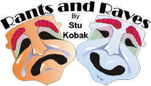

DVD Review Archive
Feature Archive Back Issues Links DVD MIA DVD
Alerts Movie Posters Laser Site Info Home E-mail
© 2002 Films on Disc Stuart J. Kobak ALL RIGHTS RESERVED.
|
|
|
 August 14, 2002 Revolting Foreign Film Treatment Just
wanted to get this off my chest a bit. The disgusting treatment of
foreign films on DVD. Some of the shoddiest source materials are dug up
by so-called champions of independent and foreign cinema. Take Kino
International for instance: They put out lots of fine foreign DVD
titles, but it seems like they treat the material and the consumer like
yesterday's garbage. I just watched the fascinating Code Unknown
directed by Michael Haneke. It looked like crapola. Their release of
Bertrand Tanvernier's Captaine Conan was unwatchable. Kadosh, Life on a
String, and were terrible. Isn't there some responsibility to put some
effort to deliver a decent looking DVD. Winstar/Fox Lorber (Wellspring
now) is another company that has consistently shortchanged the movies
they release and the consumers who purchase them. On the other hand,
majors like Sony and Disney has usually produced beautiful DVDs from
their foreign films. Image ENtertainment too has made an attempt to get
good source material and deliver good looking DVDs. Anchor Bay found
fine elements for Paul Verhoeven's early films. Links to Rants and Raves by Date April 21 2001
|
v |